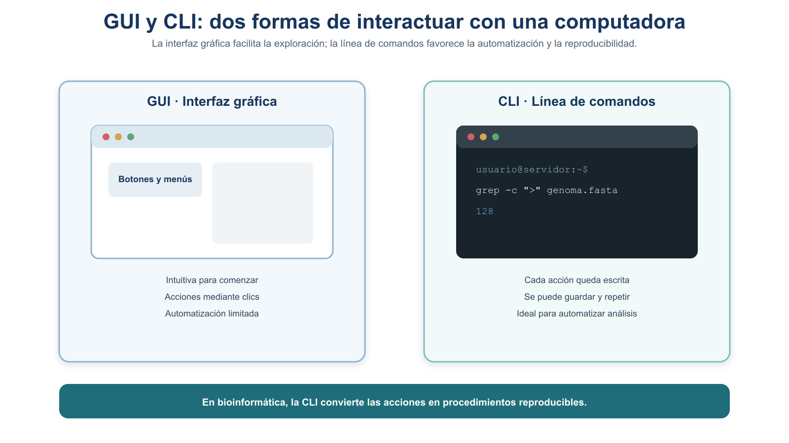
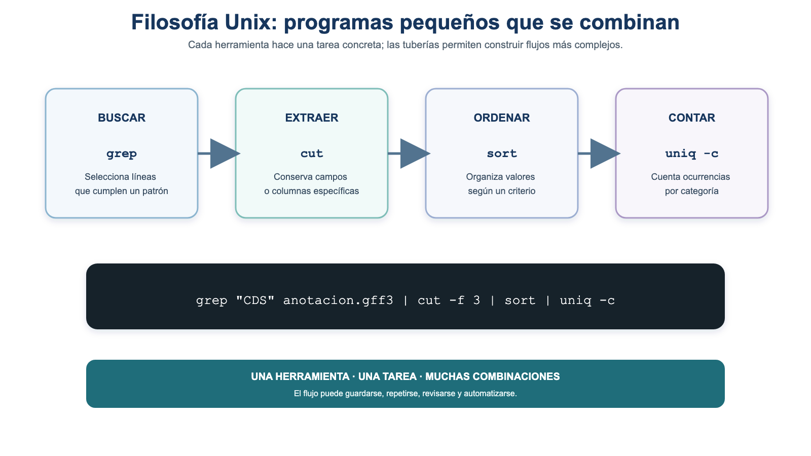
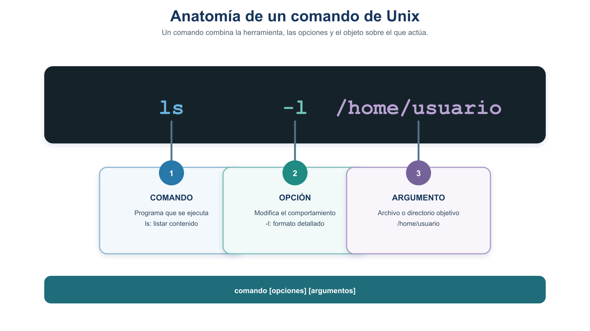
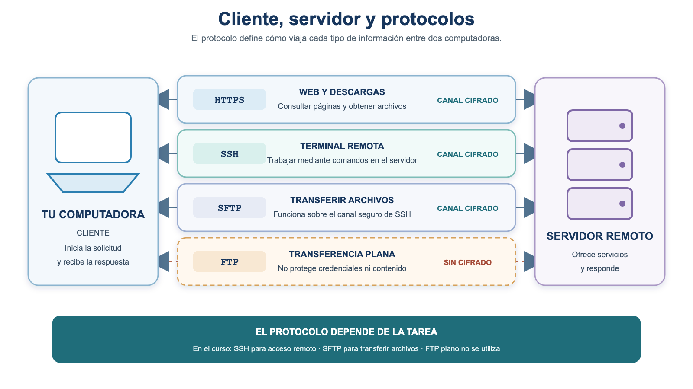
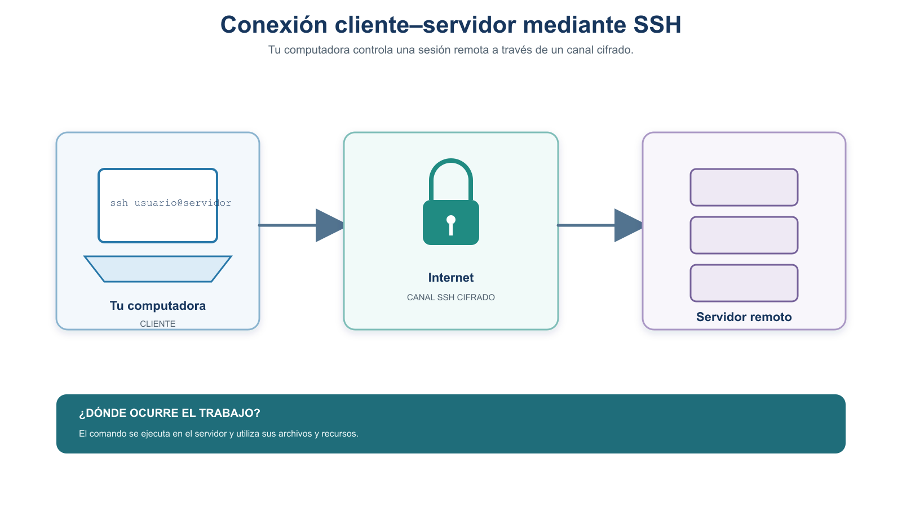
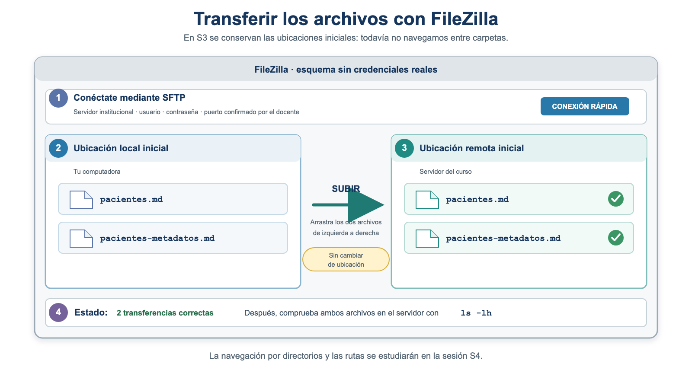

S3 — Conectar: el shell, el acceso remoto y la transferencia de archivos
Este documento se lee antes de la sesión S3. Aquí tienes los conceptos y el problema que resolveremos en clase. La sesión es práctica: casi todo lo ejecutarás en vivo sobre el servidor del curso. Trae tus archivos listos (ver Antes de la sesión) y tus dudas. A lo largo del módulo hay cinco prácticas y un cierre que retoma el protocolo iniciado en la Unidad 1.
Primer módulo de la Unidad 2. Su meta es que, partiendo de un problema real —trasladar un archivo de datos y sus metadatos al servidor del curso, comprobar que llegaron intactos y documentar el procedimiento—, aprendas a abrir una terminal, entender qué es un comando, conectarte por SSH, reconocer el entorno remoto y transferir archivos verificando su integridad.
Ficha del módulo
| Elemento | Descripción |
|---|---|
| Sesión | S3 (2 h) |
| Tema | El shell y protocolos de internet; acceso remoto (SSH) y transferencia |
| Competencia | B — Dominio del entorno Unix y del cómputo científico |
| Resultado (plan) | Comprende qué es Unix; se conecta a un servidor remoto y transfiere datos |
| Lectura base | Buffalo (2015), Cap. 3 (“Why Do We Use Unix…”, “shell”); documentación de OpenSSH |
| Caso conductor | Trasladar pacientes.md y sus metadatos al servidor de forma segura, íntegra y reproducible |
| Evidencia | protocolo.md actualizado y transferido, con el procedimiento y la comprobación de integridad |
Relación con la Unidad 1 y con el proyecto integrador
En la Unidad 1 trabajaste con pacientes.md, un conjunto de datos sintético de tres registros, elaboraste sus metadatos e iniciaste protocolo.md como un documento vivo. También aprendiste dos ideas que hoy usaremos: los datos originales se conservan sin modificaciones, y deben ir acompañados de la información que permite interpretarlos. A partir de esta unidad, el trabajo computacional se realiza en el servidor del curso. El primer paso es llevar allí tu archivo de datos y sus metadatos, comprobar que llegaron intactos y agregar el procedimiento al protocolo para que pueda repetirse.
Resultados de aprendizaje
Al terminar S3, el estudiante es capaz de:
- Explicar por qué la bioinformática usa Unix y la línea de comandos, en términos de reproducibilidad.
- Identificar las partes de un comando, consultar la ayuda con
many utilizar Tab, historial yCtrl-Cpara trabajar con mayor autonomía y seguridad. - Conectarse al servidor por SSH, reconocer el entorno remoto (
hostname,whoami,pwd) y salir correctamente, de forma repetida. - Transferir un archivo y sus metadatos con SFTP o FileZilla, distinguiendo el lado local del remoto.
- Comprobar la integridad de la transferencia con checksums, actualizar
protocolo.mdy transferirlo al servidor sin incluir credenciales.
Antes de la sesión
La dirección del servidor, tu usuario y tu contraseña se te darán en clase. Por eso, antes de S3 no te pedimos conectarte: preparas tus archivos y tu entorno. (Si quien imparte el curso te entrega las credenciales y la huella oficial con anticipación, puedes intentar una primera conexión; en caso contrario, no es necesario.)
| Elemento | Detalle |
|---|---|
| Lectura obligatoria | Este módulo completo + Buffalo (2015), Cap. 3 (filosofía Unix y shell). |
| Primer intento (preparación) | La lista de preflight (abajo). |
| Producto para el taller | pacientes.md, pacientes-metadatos.md y protocolo.md localizados; el entorno probado y al menos una duda anotada. |
| Tiempo estimado | Lectura ~45 min · Buffalo Cap. 3 (parte) ~30 min · preparación ~20 min. |
Preflight — prepara tus archivos y tu entorno
Revisa esta lista; si algo falta, resuélvelo o anótalo para el taller:
Nunca compartas contraseñas, llaves privadas ni tokens, ni los registres en tu bitácora o en capturas de pantalla. No proporciones información sensible a asistentes de IA, y no ejecutes comandos que te sugiera una IA sin entenderlos y verificarlos. Cuando te conectes por primera vez, verifica la huella del servidor (§7) contra la que dé quien imparte el curso.
Bloque 1 — Por qué Unix, y de qué está hecho el entorno
Antes de conectarnos necesitamos un marco común. Como no todo el grupo tiene el mismo Unix local, en este bloque las ideas se presentan de forma conceptual; la práctica uniforme de comandos vendrá después de la primera conexión, ya sobre el servidor Linux del curso (el entorno común).
1. ¿Por qué usamos Unix en bioinformática?
Unix es una familia de sistemas operativos creada en los años 70. Hoy casi toda la bioinformática se ejecuta sobre sistemas tipo Unix (Linux y macOS lo son). La razón que más nos importa es la reproducibilidad: en Unix, cada acción es un comando de texto que puedes guardar, repetir y compartir. Volviendo al caso: si trasladas pacientes.md “a mano” arrastrando iconos, será difícil explicar después cómo lo hiciste; si lo haces con comandos, tu procedimiento queda escrito y se puede repetir (Buffalo, 2015, Cap. 3).
2. GUI frente a CLI
- GUI (Graphical User Interface, interfaz gráfica): se opera con el ratón. Es intuitiva, pero difícil de automatizar y de documentar (¿cómo escribes “hice clic aquí” de forma reproducible?).
- CLI (Command Line Interface, interfaz de línea de comandos): se opera escribiendo instrucciones de texto. Tiene más curva de aprendizaje, pero cada acción es un comando que puedes guardar, repetir, automatizar y compartir.

Figura 1. GUI frente a CLI: la interfaz gráfica se opera con clics difíciles de documentar; la línea de comandos se opera con texto que puede guardarse y repetirse.
3. La filosofía Unix
La filosofía Unix consiste en tener muchos programas pequeños, cada uno de los cuales hace una sola cosa y la hace bien, y que se combinan para resolver tareas complejas (lo veremos con las tuberías en la Unidad 4).

Figura 2. Filosofía Unix: cada herramienta hace una tarea concreta y las tuberías las combinan en un flujo que puede guardarse y repetirse.
Unix nació alrededor de 1969–1970 en los Laboratorios Bell (AT&T), de la mano de Ken Thompson y Dennis Ritchie. Hoy macOS está construido sobre una base tipo Unix y Linux —un sistema tipo Unix libre— domina los servidores científicos del mundo (Ritchie & Thompson, 1974).
4. Terminal y shell: no son lo mismo
- El shell es un programa intérprete de comandos: lee lo que escribes, se lo pide al sistema operativo y te devuelve el resultado. Existen varios (bash, zsh, tcsh, csh); el más común es bash.
- La terminal es la ventana donde se ejecuta el shell. La terminal es el contenedor; el shell es quien interpreta.
5. Anatomía de un comando
Un comando de Unix tiene tres partes:
comando -opciones argumentos
# ejemplo:
ls -l pacientes.md- comando: la herramienta (
ls,hostname,whoami…). - opciones (o flags): modifican el comportamiento; suelen empezar con
-(p. ej.-l). - argumentos: sobre qué actúa el comando (en este ejemplo, el archivo
pacientes.md).

Figura 3. Anatomía de un comando: el comando, sus opciones y sus argumentos.
6. Cliente, servidor y protocolos
Cuando tu computadora pide algo por la red actúa como cliente frente a un servidor que responde. Un servidor es una computadora —normalmente potente y siempre encendida— que ofrece servicios o datos. Para entenderse usan protocolos (reglas comunes):
- HTTP (HyperText Transfer Protocol): protocolo de la web que, por sí mismo, no cifra la comunicación. HTTPS añade una conexión cifrada.
- FTP (File Transfer Protocol): dedicado a transferir archivos (sin cifrar).
- SSH (Secure SHell): para conectarse de forma segura (cifrada) a una máquina remota y trabajar en ella. SFTP transfiere archivos sobre ese canal seguro de SSH.

Figura 4. Cliente, servidor y protocolos: el protocolo determina cómo se comunican las dos computadoras. En el curso utilizaremos SSH para el acceso remoto y SFTP para transferir archivos mediante un canal cifrado.
“Seguro” en SSH significa que la comunicación viaja cifrada: aunque alguien intercepte los datos, no puede leerlos. Por eso para nuestros datos preferimos SFTP (sobre SSH) y no FTP plano.
Comprueba tu comprensión antes de conectarte
Elige una respuesta antes de abrir la retroalimentación.
Pregunta 1 — Anatomía de un comando
Quieres comprobar si pacientes.md aparece en una lista detallada de archivos y encuentras esta instrucción:
ls -l pacientes.md¿Cuál es la función de cada elemento?
- A.
lses el argumento,-les el comando ypacientes.mdes la opción. - B.
lses el comando,-les la opción ypacientes.mdes el argumento. - C.
lses el servidor,-les el protocolo ypacientes.mdes el comando.
Ver retroalimentación
Respuesta correcta: B. ls es el programa que se ejecuta, -l modifica su comportamiento para producir una lista detallada y pacientes.md es el archivo sobre el que actúa. Reconocer estas partes te ayudará a interpretar comandos nuevos y consultar sus opciones en el manual.
Pregunta 2 — Terminal y shell
Cuando escribes un comando, ¿qué relación existe entre la terminal y el shell?
- A. La terminal es la ventana donde escribes y el shell interpreta el comando.
- B. El shell es la ventana y la terminal es el servidor remoto.
- C. Son dos nombres para el mismo protocolo de internet.
Ver retroalimentación
Respuesta correcta: A. La terminal es la interfaz o ventana donde escribes. Dentro de ella se ejecuta el shell, que interpreta el comando y solicita su ejecución al sistema operativo. Cuando te conectes por SSH seguirás usando una terminal, pero el shell que responde estará en el servidor.
Pregunta 3 — Transferencia segura
Necesitas enviar pacientes.md y sus metadatos al servidor del curso. ¿Qué opción es apropiada?
- A. FTP plano, porque está diseñado para transferir archivos aunque no cifre la conexión.
- B. SFTP, porque transfiere los archivos mediante el canal cifrado de SSH.
- C. HTTP, porque cualquier protocolo de la web protege automáticamente los archivos.
Ver retroalimentación
Respuesta correcta: B. SFTP utiliza el canal seguro proporcionado por SSH. Esto protege durante la transferencia tanto las credenciales como el contenido transmitido. FTP plano no cifra la comunicación y HTTP no implica cifrado; cuando la web usa cifrado, el protocolo es HTTPS.
Pregunta 4 — Reproducibilidad
¿Por qué utilizar comandos de texto puede favorecer la reproducibilidad?
- A. Porque todo comando produce automáticamente un resultado correcto.
- B. Porque los comandos siempre son más rápidos que una interfaz gráfica.
- C. Porque la instrucción exacta puede registrarse, revisarse, compartirse y ejecutarse nuevamente.
Ver retroalimentación
Respuesta correcta: C. Un comando no garantiza por sí mismo que el procedimiento sea correcto. Su ventaja es que deja una instrucción explícita que puede registrarse en la bitácora, revisarse y repetirse. La reproducibilidad requiere además conservar los datos, documentar el entorno y verificar los resultados.
Si alguna respuesta no fue correcta, vuelve a consultar la sección correspondiente antes de iniciar la conexión.
Bloque 2 — Entrar al servidor y reconocer el entorno
7. Conexión por SSH
Para conectarte usas el comando ssh con tu usuario y la dirección del servidor. La estructura es siempre la misma:
[LOCAL] Ejecuta en tu computadora:
ssh usuario@servidor
# la dirección exacta, tu usuario y tu contraseña se dan en clase.
# ejemplo genérico de la estructura:
ssh usuario@servidor.institucion.mxLa primera vez, SSH te mostrará la huella (fingerprint) del servidor y te preguntará si confías en ella. Después te pedirá la contraseña.
Al teclear la contraseña, SSH no muestra caracteres (ni asteriscos). Es normal: escribe con cuidado y presiona Enter.
¿Qué es la huella del servidor?
La huella (fingerprint) es la “identificación” única del servidor. Cada servidor SSH tiene un par de llaves criptográficas; la huella es un resumen corto y legible de su llave pública (formato SHA-256). Sirve para responder: ¿la máquina que dice ser el servidor del curso es realmente esa, y no un impostor que interceptó mi conexión?
La primera vez verás un mensaje como este; la línea clave es la de la huella:
The authenticity of host 'servidor (xxx.xxx.xxx.xxx)' can't be established.
ED25519 key fingerprint is SHA256:uT9k2pXo3mLbQ7...Xw8/Qa4cR2eZ.
Are you sure you want to continue connecting (yes/no/[fingerprint])?- Si la huella coincide con la oficial, escribe
yes. SSH la guarda y no volverá a preguntar. - Si no coincide, escribe
noy detente: podría ser una suplantación. Consúltalo. - Aceptar la huella no salta la contraseña: solo confirma la identidad del servidor.

Figura 5. Conexión por SSH: tu computadora (cliente) establece un canal cifrado por internet hacia el servidor remoto.
Si algún día SSH te avisa de que la huella cambió inesperadamente, no la aceptes: detente y consúltalo. Un cambio no anunciado puede indicar un problema de seguridad.
Los servidores de cómputo suelen llevar nombres temáticos (deidades, ríos, montañas…) en vez de una simple dirección numérica; así es más fácil recordar a cuál te conectas. El nombre del servidor del curso lo conocerás en clase.
¿Local o remoto? Aprende a reconocer dónde estás
Un error clásico al empezar es no saber si un comando se ejecuta en tu computadora o en el servidor. Usaremos estas etiquetas en todos los bloques de comandos:
| Contexto | Cómo reconocerlo | Qué controla |
|---|---|---|
[LOCAL] |
hostname muestra el nombre de tu computadora |
Archivos de tu computadora |
[REMOTO] |
hostname muestra el nombre del servidor |
Archivos y procesos del servidor |
[SFTP] |
El prompt cambia a sftp> |
La transferencia entre ambos lados |
Nunca ejecutes un comando de transferencia sin tener claro desde qué contexto lo corres. Ante la duda, ejecuta hostname, whoami y pwd.
Práctica 1 — Entrar al servidor, reconocer el entorno y salir
Problema. Antes de mover o procesar datos necesitas entrar al servidor, saber en qué máquina estás, con qué cuenta trabajas y dónde comenzó tu sesión, y salir correctamente.
[LOCAL] Ejecuta en tu computadora:
ssh usuario@servidor # usa las credenciales dadas en clase[REMOTO] Ejecuta ya dentro del servidor:
hostname # ¿en qué computadora estoy?
whoami # ¿con qué cuenta trabajo?
pwd # ¿en qué ubicación comenzó mi sesión?
exit # cierra la sesión remotaCada comando responde una pregunta:
| Pregunta | Comando |
|---|---|
| ¿En qué computadora estoy? | hostname |
| ¿Con qué cuenta estoy trabajando? | whoami |
| ¿En qué ubicación comenzó mi sesión? | pwd |
| ¿Cómo cierro correctamente la sesión remota? | exit |
Observa el prompt (el texto antes del cursor) antes y después de conectarte: cambia, porque pasas de tu computadora al servidor.
Ten claro que:
- estás en tu computadora hasta que ejecutas
sshy aceptas/entras; - estás dentro del servidor entre esa conexión y el
exit; exitcierra la sesión remota, no la aplicación de terminal;Ctrl-Dtambién cierra una sesión, pero en esta lección usaremosexitcomo forma principal.
Después de la práctica, responde: (1) ¿Qué observaste en el prompt al conectarte y al salir? (2) ¿Cómo se relaciona saber “dónde estás” con el problema de trasladar
pacientes.mdsin equivocarte de máquina?
Práctica 2 — Entrar, salir y volver a entrar
Conectarse es una habilidad que se afianza con repetición, no algo que se hace una sola vez. Haz tres ciclos de:
conectarse → hostname → whoami → pwd → exit- Primera ronda, acompañada (sigue los pasos con el docente).
- Segunda ronda, con tus notas (guíate por lo que anotaste).
- Tercera ronda, sin instrucciones paso a paso (de memoria).
Al terminar, explica con tus palabras: cómo sabes que estás en el servidor, con qué usuario trabajas, cómo sales, cómo vuelves a entrar y qué cambia en el prompt.
Después de la práctica, responde: (1) ¿Qué te costó más al principio y qué ya haces sin pensar? (2) ¿Por qué conviene dominar la conexión antes de transferir los datos?
Bloque 3 — Comandos y ayuda, ya dentro del servidor
Ahora que todo el grupo comparte el mismo entorno (el servidor Linux), aplicamos la anatomía de comandos y la consulta de ayuda en la práctica.
Práctica 3 — Reconocer archivos y consultar ayuda en el servidor
Problema. Antes de transferir o procesar datos científicos necesitas reconocer dónde estás, qué archivos existen y cómo obtener ayuda cuando no recuerdas una opción.
[REMOTO] Ejecuta dentro del servidor:
pwd # ¿dónde estoy?
ls # ¿qué hay aquí?
ls -l # lo mismo, con detalle (permisos, tamaño, fecha)
man ls # manual de ls (avanza con la barra espaciadora; sal con q)
ls -lh # tamaños en formato legible (K, M, G)
history # lista los comandos que ya ejecutastePasos:
- Ejecuta
pwd. - Ejecuta
ls. - Compara
lsconls -l: ¿qué información añade? - Abre
man ls. - Localiza en el manual la opción
-h. - Sal del manual con
q. - Prueba
ls -lh. - Recupera un comando anterior con la flecha ↑.
- Revisa
history. - En un comando que ejecutaste (p. ej.
ls -lh), identifica comando, opciones y argumentos.
Cada comando resuelve una necesidad real:
pwd: evitar trabajar en la ubicación equivocada;lsyls -l: comprobar que un archivo existe y ver su información básica;ls -lh: leer el tamaño de forma legible;man: resolver dudas sin depender del docente;- flecha ↑ e
history: recuperar y documentar lo que hiciste.
history te ayuda a reconstruir lo ejecutado, pero no sustituye una bitácora organizada: sigue anotando en tu protocolo qué hiciste y por qué.
Después de la práctica, responde: (1) ¿Qué opción de
lsencontraste conmany para qué sirve? (2) ¿Cómo te ayudaráls -lhcuando quieras confirmar quepacientes.mdllegó al servidor?
Tab: autocompletar para no equivocarte de archivo
Los archivos científicos suelen tener nombres largos, con identificadores, versiones y sufijos. Un error de una sola letra puede hacer que un comando falle o use el archivo equivocado.
La tecla Tab autocompleta nombres de comandos y archivos. Práctica breve: en el servidor, empieza a escribir el nombre de un archivo o carpeta que ya exista en tu directorio (por ejemplo, teclea las primeras letras de lo que muestre ls) y presiona Tab para que se complete solo.
No necesitas que pacientes.md ya esté en el servidor para practicar Tab; usa cualquier nombre existente que aparezca con ls.
Ctrl-C: detener algo que no debería seguir
Un análisis o una descarga puede tardar más de lo esperado, haberse iniciado con parámetros incorrectos o estar usando el archivo equivocado. Debes saber detenerlo antes de generar más trabajo innecesario.
Simulación segura: sleep solo hace que la terminal “espere” un rato; lo usamos para representar de forma controlada un proceso que aún no termina (no tiene fin bioinformático):
[REMOTO] Ejecuta dentro del servidor:
sleep 30 # la terminal queda "ocupada" 30 segundos
# presiona Ctrl-C para detenerlo antes de que termineInícialo y detenlo con Ctrl-C: la terminal vuelve a quedar disponible de inmediato.
Después de la práctica, responde: (1) ¿Qué pasó en la terminal al presionar
Ctrl-C? (2) ¿En qué situación real de transferencia te gustaría poder cancelar de inmediato?
Bloque 4 — Transferir los datos y verificar su integridad
Ya sabes entrar, reconocer el entorno y pedir ayuda. Ahora resolvemos el corazón del caso: mover pacientes.md y sus metadatos al servidor.
8. SFTP y FileZilla (herramientas principales de S3)
En S3 usamos SFTP (transferencia segura sobre SSH), ya sea por terminal o con FileZilla (interfaz gráfica). Con SFTP abres una sesión que “ve” los dos lados: el local (tu computadora) y el remoto (el servidor).
Si usas SFTP por terminal, primero abre la sesión desde tu computadora:
[LOCAL] En tu computadora:
sftp usuario@servidorCuando el prompt cambie a sftp>, utiliza este conjunto mínimo:
sftp> lpwd
sftp> lls
sftp> pwd
sftp> ls
sftp> put pacientes.md
sftp> put pacientes-metadatos.md
sftp> exitlpwdylls: muestran la ubicación y los archivos del lado local.pwdyls: muestran la ubicación y los archivos del lado remoto.put archivo: sube un archivo desde el lado local al remoto.exit: cierra SFTP.
Antes de conectarte, abre la terminal desde el lugar donde guardaste pacientes.md y pacientes-metadatos.md, según la indicación del docente. Al entrar por SFTP, conserva tanto la ubicación local como la ubicación remota inicial. lpwd y pwd se usan únicamente para observar y distinguir ambos lados; las rutas y la navegación se estudiarán formalmente en S4.
Si usas FileZilla:
- usa SFTP, no FTP plano;
- identifica el panel local (izquierda) y el panel remoto (derecha);
- no guardes ni muestres credenciales en capturas;
- usa el puerto institucional confirmado (normalmente 22, si corresponde).

Figura 6. Transferencia en FileZilla (esquema didáctico, no es una captura real): sin cambiar de ubicación, se arrastran pacientes.md y pacientes-metadatos.md del panel local (izquierda) al remoto (derecha).
Existen también scp y rsync para transferir desde la línea de comandos sin abrir una sesión interactiva. Los aplicaremos en S4, junto con rutas y navegación. La siguiente tabla los sitúa; en S3 nuestra herramienta práctica es SFTP/FileZilla.
| Herramienta | Cuándo conviene | Se practica en |
|---|---|---|
| SFTP / FileZilla | Subir archivos puntuales de forma guiada e interactiva | S3 (esta sesión) |
scp |
Copiar un archivo o carpeta en una sola orden | S4 |
rsync |
Sincronizar muchos archivos; reanudar con -avP |
S4 |
Práctica 4 — Transferir los datos y sus metadatos
Problema.
pacientes.mdypacientes-metadatos.mdestán en tu computadora, pero el trabajo posterior se hará en el servidor. El dato debe viajar acompañado de la información que permite interpretarlo.
Pasos:
- Identifica los dos archivos en tu computadora (
pacientes.mdypacientes-metadatos.md). - Conéctate por SFTP (terminal) o abre FileZilla con SFTP.
- Distingue el lado local del remoto (usa
lpwd/pwd, o los dos paneles de FileZilla). - Sube
pacientes.md(conputo arrastrando en FileZilla). - Sube
pacientes-metadatos.md. - Cierra la sesión de transferencia (
exito desconectar en FileZilla). - Conéctate por SSH al servidor.
- Confirma con
ls -lhque ambos archivos llegaron a la ubicación inicial. - Sal correctamente (
exit). - Vuelve a conectarte y comprueba de nuevo que siguen ahí.
[REMOTO] Tras la transferencia, confirma en el servidor:
ls -lh # deben aparecer pacientes.md y pacientes-metadatos.mdDespués de la práctica, responde: (1) ¿Cómo distinguiste el lado local del remoto? (2) ¿Por qué el dato debe viajar junto con sus metadatos y no solo?
9. Verificación de integridad con checksums
Que el nombre del archivo aparezca en el servidor no demuestra que su contenido sea idéntico al original: el tamaño o la simple presencia no bastan. La comprobación correcta es un checksum (suma de verificación): una “huella digital” del contenido. Si la huella del origen y la del destino coinciden, el archivo es idéntico.
Práctica 5 — Comprobar que los archivos llegaron intactos
Problema. Antes de analizar datos científicos debemos comprobar que la transferencia no los modificó.
Calcula la huella en tu computadora (origen) y en el servidor (destino) y compáralas.
[LOCAL] En macOS:
shasum -a 256 pacientes.md
shasum -a 256 pacientes-metadatos.md[LOCAL] En Linux, WSL o Git Bash:
sha256sum pacientes.md
sha256sum pacientes-metadatos.md[REMOTO] En el servidor Linux:
sha256sum pacientes.md
sha256sum pacientes-metadatos.md[LOCAL] En PowerShell de Windows:
Get-FileHash .\pacientes.md -Algorithm SHA256
Get-FileHash .\pacientes-metadatos.md -Algorithm SHA256Completa la tabla:
| Archivo | Checksum local | Checksum remoto | ¿Coinciden? |
|---|---|---|---|
pacientes.md |
|||
pacientes-metadatos.md |
Ten en cuenta que:
- todos los comandos mostrados usan SHA-256 (mismo algoritmo, distinto nombre según el sistema);
- se compara la cadena de la huella, no el nombre del archivo;
- el tamaño o la presencia del archivo no bastan;
- si las huellas no coinciden, no uses el archivo: repite y vuelve a verificar la transferencia.
Esta es tu primera aplicación de la verificación de integridad. La retomaremos con datos biológicos reales al descargar de bases públicas en la Unidad 3.
Después de la práctica, responde: (1) ¿Coincidieron las huellas del archivo local y del archivo remoto? (2) ¿Por qué no basta con ver que el archivo “está” en el servidor?
Cierre de S3 — Actualiza y transfiere tu protocolo
En la Unidad 1 comenzaste protocolo.md como un documento vivo para registrar la resolución del problema bioinformático. Ahora agregarás la primera parte ejecutable del procedimiento: el acceso al servidor, la transferencia de los datos y la comprobación de su integridad.
No repitas innecesariamente la transferencia de pacientes.md ni de sus metadatos. Utiliza los comandos, resultados y checksums que fuiste registrando durante las cinco prácticas.
10. Documenta el procedimiento en protocolo.md
Agrega una sección como la siguiente y complétala con lo que realmente hiciste:
## Acceso remoto y transferencia de los datos
### Objetivo
Transferir `pacientes.md` y `pacientes-metadatos.md` al servidor del curso mediante una conexión
cifrada y comprobar que los archivos llegaron intactos.
### Entorno utilizado
- Sistema local:
- Cliente utilizado:
- Servidor: nombre institucional, sin usuario ni contraseña
- Protocolo de transferencia: SFTP
### Procedimiento
| Contexto | Acción o comando | Propósito |
| --- | --- | --- |
| Local | | |
| SSH/remoto | | |
| SFTP | | |
### Verificación de integridad
| Archivo | Checksum local | Checksum remoto | ¿Coinciden? |
| --- | --- | --- | --- |
| `pacientes.md` | | | |
| `pacientes-metadatos.md` | | | |
### Resultado
Indica si los archivos fueron transferidos correctamente y explica qué evidencia sustenta tu
afirmación.
### Problemas encontrados
Registra el mensaje de error, el contexto en el que apareció y cómo lo resolviste. Si no encontraste
problemas, indícalo explícitamente.Antes de continuar, revisa que el protocolo:
- distinga con claridad las acciones
[LOCAL],[REMOTO]y[SFTP]; - contenga los comandos exactos, no una reconstrucción inventada;
- relacione cada acción con el problema que resuelve;
- compare los checksums locales y remotos;
- no incluya contraseñas, llaves privadas, tokens ni otros datos sensibles.
11. Transfiere el protocolo como tercer archivo
Coloca protocolo.md junto con los otros dos archivos en la ubicación local indicada por quien imparte el curso. Sin cambiar de ubicación, abre SFTP y comprueba con ls si ya existe un archivo con ese nombre en el servidor. Si existe, no lo sobrescribas sin consultar primero.
[SFTP] Si el nombre está disponible:
sftp> put protocolo.md
sftp> exitDespués, entra nuevamente por SSH y confirma la presencia de los tres archivos:
[REMOTO] En el servidor:
ls -lh pacientes.md pacientes-metadatos.md protocolo.mdAl terminar, el servidor debe contener:
pacientes.md: los datos;pacientes-metadatos.md: la información necesaria para interpretarlos;protocolo.md: el registro reproducible del procedimiento.
Recuerda — enlace con S4. En S3 conservamos los archivos en la ubicación inicial del servidor. En S4 construiremos la estructura reproducible del proyecto y aprenderemos a trabajar con directorios y rutas.
12. Revisión crítica con IA — después de la sesión
Esta actividad retoma el eje de IA iniciado en la Unidad 1. Realízala después de escribir el procedimiento con tus propias palabras: la IA revisará tu documentación, pero no sustituirá la ejecución ni propondrá comandos nuevos.
Antes de consultar un asistente:
- trabaja con una copia de la sección que redactaste;
- sustituye el servidor y el usuario por marcadores como
[SERVIDOR]y[USUARIO]; - elimina contraseñas, direcciones IP, huellas institucionales, llaves, tokens y datos sensibles;
- conserva tu versión original para poder comparar los cambios.
Ver prompt sugerido
Estoy aprendiendo acceso remoto y transferencia segura de archivos en un curso de bioinformática. Escribí el siguiente registro después de conectarme por SSH, transferir dos archivos mediante SFTP y comparar sus checksums. Revisa si otra persona podría reproducir el procedimiento. Identifica pasos ambiguos, información faltante o afirmaciones que no estén sustentadas por la evidencia. No agregues comandos nuevos ni inventes datos. No reescribas el documento completo: presenta tus observaciones en una tabla con las columnas “hallazgo”, “por qué importa” y “corrección sugerida”.
Compara las observaciones con esta lección y decide cuáles aceptar. Registra en bitacora-ia.md:
- el prompt utilizado y la respuesta relevante;
- las observaciones que aceptaste o rechazaste y por qué;
- la fuente o evidencia con que verificaste cada corrección;
- los cambios que finalmente incorporaste al protocolo;
- tu conclusión sobre la confiabilidad de la revisión.
No ejecutes un comando sugerido por la IA únicamente porque parezca correcto. En esta actividad la IA funciona como revisora de documentación, no como operadora del servidor.
Evidencia de aprendizaje
La evidencia principal es protocolo.md actualizado y transferido al servidor. Debe incluir:
- el objetivo de la transferencia;
- el sistema local y el cliente utilizados;
- la distinción entre acciones
[LOCAL],[REMOTO]y[SFTP]; - los comandos exactos ejecutados y el propósito de cada uno;
- la tabla de checksums completa;
- una afirmación sustentada de que los archivos llegaron intactos;
- el error encontrado y cómo lo diagnosticaste, si aplica;
- ausencia de credenciales o información sensible.
Como evidencia complementaria, bitacora-ia.md debe registrar la revisión crítica realizada después de la sesión. Una captura de pantalla, por sí sola, no sustituye ninguna de estas evidencias.
Errores frecuentes y cómo diagnosticarlos
| Síntoma | Interpretación o acción |
|---|---|
| La contraseña parece no escribirse | SSH no muestra caracteres; es normal |
Could not resolve hostname |
Revisar el nombre del servidor, la red o la VPN |
Connection refused |
Revisar servidor, puerto, red o disponibilidad |
Permission denied |
Revisar usuario, contraseña o método de autenticación |
| La huella no coincide | No aceptar; consultar al responsable |
| No sé si estoy local o remoto | Ejecutar hostname, whoami y pwd |
El prompt muestra sftp> |
Estás en una sesión SFTP, no en un shell |
No such file or directory |
Revisar el contexto (local/remoto) y el nombre del archivo |
| El archivo se transfirió al lugar equivocado | Identificar de nuevo el lado local y el remoto |
| Los checksums no coinciden | No usar el archivo; repetir y verificar la transferencia |
ls --help no funciona localmente en macOS |
Usar man ls; --help depende de la implementación |
Portabilidad (esencial vs. consulta)
- El servidor del curso (Linux) es nuestro entorno común: los comandos remotos son iguales para todo el grupo.
man lses la forma preferida y más portable de consultar ayuda.ls --helpfunciona en GNU/Linux, pero no necesariamente en ellsestándar de macOS.- Los comandos ejecutados localmente pueden variar según tu sistema; los remotos conviene probarlos primero en el servidor.
Criterios de logro
| Criterio | Logrado | Parcialmente logrado | Aún no logrado |
|---|---|---|---|
| Reconocer el entorno remoto | Usa hostname/whoami/pwd y sabe si está local o remoto |
Se conecta pero confunde contextos | No distingue local de remoto |
| Conexión repetida | Entra, sale y vuelve a entrar con autonomía | Lo logra solo con la guía paso a paso | No completa el ciclo |
| Ayuda y comandos | Encuentra una opción con man e identifica partes de un comando |
Ejecuta sin interpretar | No usa la ayuda |
| Transferencia con metadatos | Sube dato y metadatos, distinguiendo local/remoto | Solo completa una parte | No transfiere |
| Verificación de integridad | Calcula y compara checksums; coinciden | Calcula sin comparar | No verifica |
| Protocolo reproducible | Actualiza y transfiere protocolo.md con comandos, propósitos, contextos y checksums, sin credenciales |
Protocolo incompleto o no transferido | Sin protocolo o con credenciales |
| Revisión crítica con IA | Registra, verifica y decide qué observaciones incorporar | Registra la respuesta sin verificarla | Acepta la respuesta sin revisión o comparte información sensible |
Autoevaluación — semáforo de salida
- 🟢 Verde: entré y salí del servidor varias veces, transferí los tres archivos, mis checksums coincidieron y
protocolo.mddocumenta lo que hice. - 🟡 Amarillo: transferí los archivos, pero dudo de la verificación de integridad o de distinguir local/remoto, o mi protocolo está incompleto.
- 🔴 Rojo: me atoré en la conexión o la transferencia; llevo el error exacto al taller.
Distribución orientativa de las dos horas
| Tiempo | Actividad |
|---|---|
| 0–10 min | Recuperación: reproducibilidad, Unix y caso pacientes.md |
| 10–25 min | Primera conexión SSH acompañada (Práctica 1) |
| 25–35 min | Tres ciclos de conexión, reconocimiento y salida (Práctica 2) |
| 35–55 min | Comandos, ayuda y atajos dentro del servidor (Práctica 3) |
| 55–80 min | Transferencia guiada con SFTP o FileZilla (Práctica 4) |
| 80–95 min | Verificación mediante checksums (Práctica 5) |
| 95–110 min | Actualización y transferencia de protocolo.md |
| 110–115 min | Margen para diagnosticar problemas y confirmar los tres archivos |
| 115–120 min | Semáforo de salida y registro de dudas |
La revisión crítica con IA y su registro en bitacora-ia.md se realizan después de la sesión.
Alineación resultado–actividad–evidencia
| Resultado | Actividad principal | Evidencia |
|---|---|---|
| Explica por qué Unix/CLI favorecen la reproducibilidad | Caso conductor y discusión | Explicación breve vinculada con pacientes.md |
| Identifica partes de un comando y consulta ayuda | Práctica 3 | Comando analizado y opción localizada con man |
| Se conecta y reconoce el entorno remoto | Prácticas 1–2 | Registro de conexión, hostname, whoami, pwd y salida |
| Transfiere datos y metadatos | Práctica 4 | Ambos archivos presentes en el servidor |
| Verifica integridad | Práctica 5 | Checksums locales y remotos coincidentes |
| Documenta de manera reproducible | Cierre de S3 | protocolo.md actualizado y transferido, sin credenciales |
| Utiliza IA de forma crítica y declarada | Revisión posterior | Entrada completa y verificada en bitacora-ia.md |
Glosario
| Español | Inglés | Definición breve |
|---|---|---|
| Línea de comandos | Command line (CLI) | Interfaz que se opera escribiendo comandos de texto. |
| Intérprete de comandos / shell | Shell | Programa que interpreta y ejecuta tus comandos. |
| Terminal | Terminal | Ventana donde se ejecuta el shell. |
| Cliente–servidor | Client–server | Modelo en que un cliente pide y un servidor responde. |
| Conexión segura | Secure shell (SSH) | Protocolo cifrado para trabajar en una máquina remota. |
| Transferencia segura | SFTP | Transferencia de archivos sobre el canal cifrado de SSH. |
| Huella | Fingerprint | Resumen que confirma la identidad de un servidor. |
| Suma de verificación | Checksum | Huella del contenido de un archivo para comprobar integridad. |
Referencias
- Buffalo, V. (2015). Bioinformatics Data Skills. O’Reilly Media. — Cap. 3 (“Remedial Unix Shell”: filosofía Unix, shell). Disponible en
referencias/bioinformatics-data-skills.pdf. - Ritchie, D. M., & Thompson, K. (1974). The UNIX Time-Sharing System. Communications of the ACM, 17(7), 365–375. doi:10.1145/361011.361061.
- Documentación oficial de OpenSSH. https://www.openssh.com/manual.html
- FileZilla — cliente de transferencia. https://filezilla-project.org/
- Noble, W. S. (2009). A Quick Guide to Organizing Computational Biology Projects. PLoS Computational Biology, 5(7), e1000424. doi:10.1371/journal.pcbi.1000424.